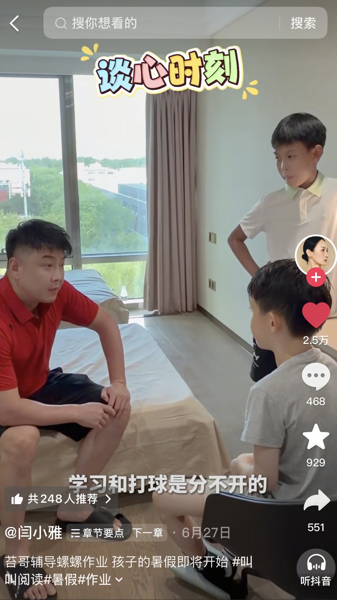
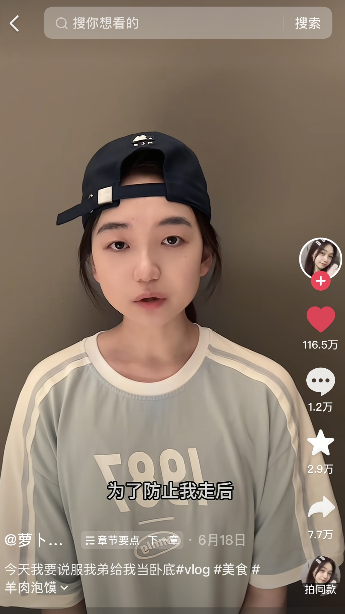
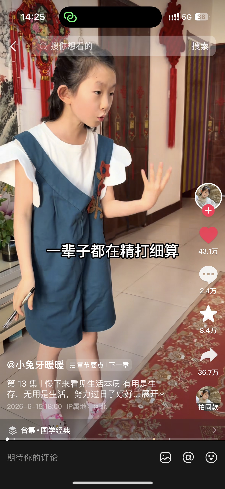
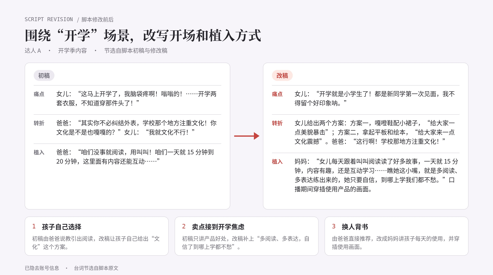
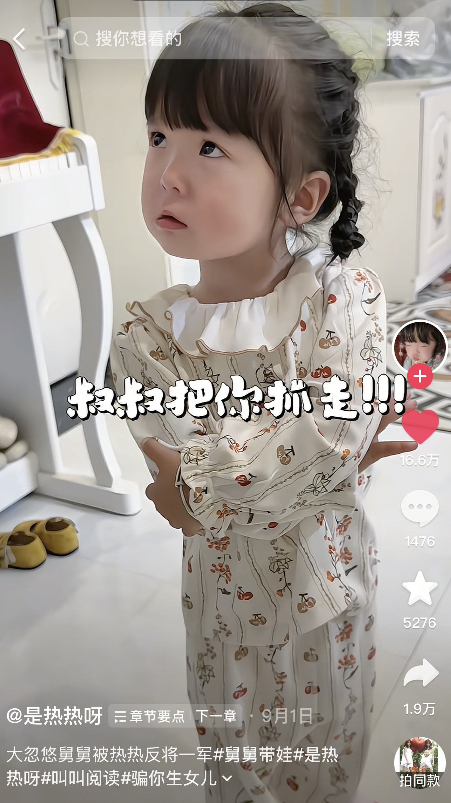
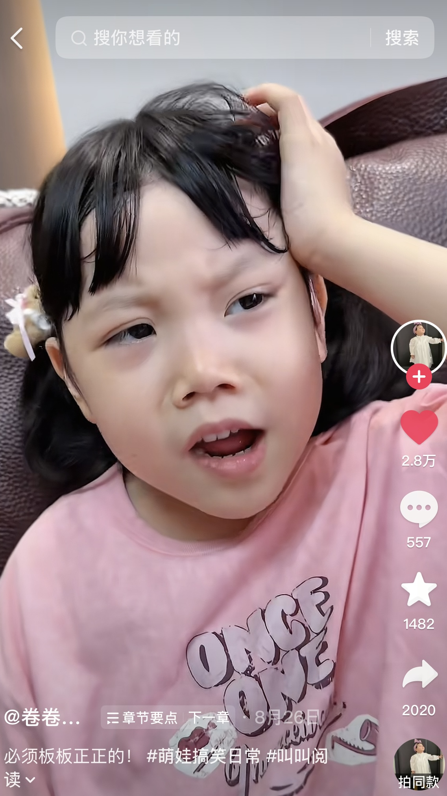
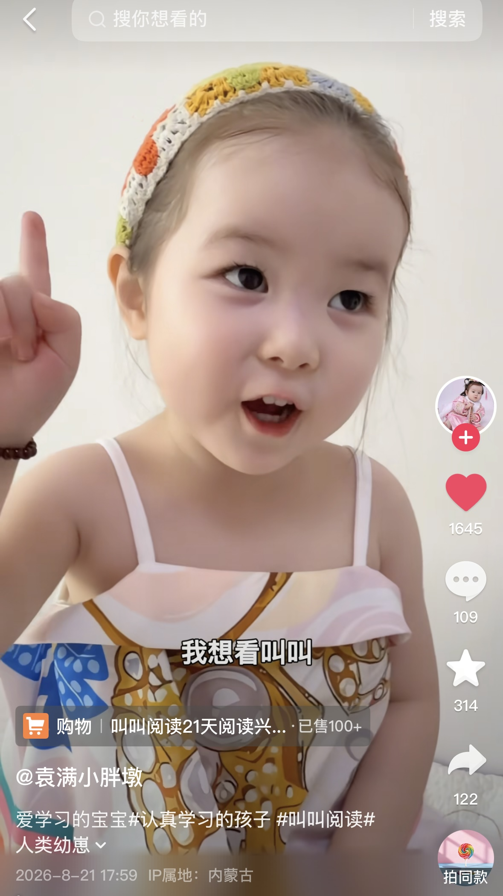
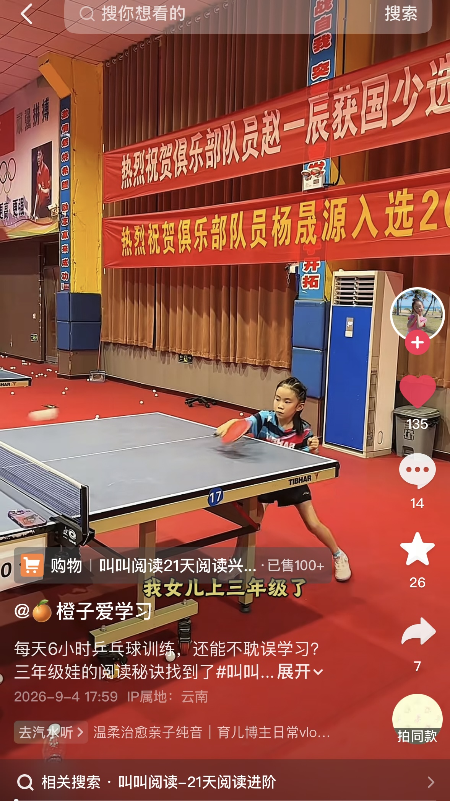
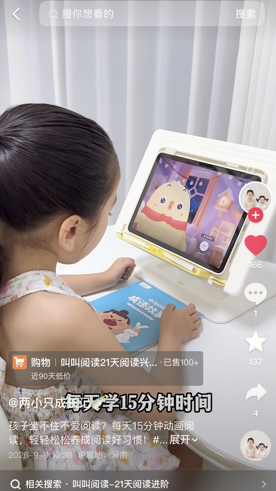

把达人内容做成可验证、可复用、可规模化的增长动作。
BACKGROUND
2026 年暑期和开学季，叫叫做了两轮达人投放：暑期大促"造势与种草"，开学季"铺量与转化"。我作为内容执行，参与从头部到腰尾部达人的脚本策划与审核。
SUMMER CAMPAIGN（暑期大促）
达人脚本共创
核心策略是不写广告，写内容。基于达人真实人设，把产品拆成生活场景里的解决方案，降低用户防御心理。
暑期大促期间，我负责@闫小雅、@二蛋叔叔、@廖语辰等多位达人的策划与对接。大部分在核心互动指标上跑赢了大盘，验证了场景植入的有效性。
161.3万播放量
84.1万播放量
254.9万播放量
经我优化脚本的达人视频，点赞和评论高于大盘平均。
以我对接的一位体育家庭达人为例（我修改后的脚本）
- 场景
- 结合暑假来临的时间节点，妈妈一人辅导两个孩子作业，压力增加。痛点定位：高知家庭也存在育儿焦虑，拉近受众距离
- 钩子
- 用"打乒乓球也需要练思维"类比阅读（借达人家庭背景，用跨界类比降低理解门槛）
- 植入
- 在哥哥教弟弟写作业自然引入产品

p1-a.jpgVIRAL REVIEW
爆款拆解
复盘 Mentor 操盘的达人合作爆款（@萝卜乔乔，播放 1,940 万），提炼出情绪共鸣＋强场景植入，并用在我负责的达人脚本中。
TOP10 占 3 席
TOP100 占 4 席
云图全行业种草内容榜，团队成果。

p2-a.jpg
p2-b.jpgBACK-TO-SCHOOL SEASON（开学季）举例：修改过的脚本（脱敏版）
腰部达人矩阵执行
开学季，我负责腰部达人的脚本审核和上线跟进，把 Mentor 制定的投放策略落到每位达人的脚本和排期上。
我负责：腰部＋部分尾部。
3位达人
3条内容按时交付

- 审核修改
- 审核修改 5 位达人的脚本，对照品牌策略和达人人设把关。针对 AI 味重、痛点不鲜明的初稿，围绕"开学"场景改写开场和植入方式（见下图）。
- 推进
- 跟进排期和数据，开学季集中上线期间，5 位达人的 5 条内容按时交付。

p3-a.jpg
p3-b.jpgKOC PROJECT
万元级 KOC 素材招募
Mentor 在星图投入 1 万元预算，我独立负责招募执行：发布招募令、筛选 KOC、建联议价、采买素材，返校前整理成 SOP 并交接。
发布招募令筛选建联议价采买授权交接 SOP
20+位 KOC 报名
3条素材上线
约 1,500元，3 条素材总花费
- Brief
- 基于预算写招募 Brief，明确硬性要求（60 秒以上、前 10 秒产品露出、真实场景），从报名的 KOC 里筛选高性价比的达人。
- 建联议价
- 独立完成 3 位 KOC 的建联、议价和脚本审核，在预算内锁定素材，拿到品牌二创授权。第 3 位视频上线后，我因返校把后续交接给同事。
- 交接
- 整理成《星图 KOC 招募 SOP》，随任务一起交接给同事。

p4-a.jpg
p4-b.jpg
p4-c.jpg